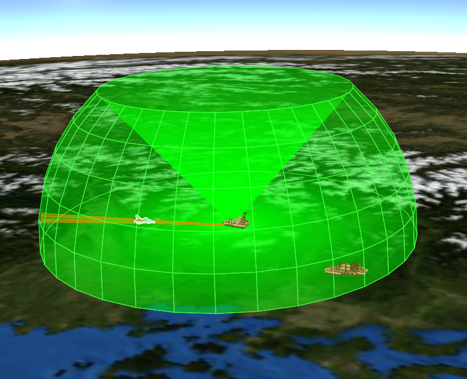
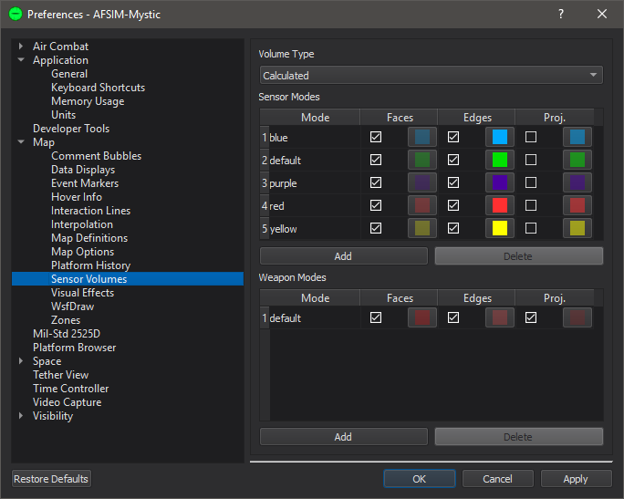

Sensor Volumes - Mystic¶
Sensor volumes can be shown on the Map Display to visualize geometric information (Field-of-view shape, range, direction) for sensors and jammers.
Visualized volumes will be occluded by the Earth’s sphere, but not smaller features, like mountains, buildings, or platforms. These occlusions are implemented as a visual affect to prevent beams from passing through the Earth; they should not be used to predict component performance.
Note
Volumes will not draw beyond 600,000 km.
Platform Options¶
Volumes are enabled/disabled from the platform options. They may be controlled at an individual sensor/jammer level.
Preferences¶
The Volume Type will change what kind of volume is shown, these are:
Slew Limits: Draw a volume that is defined by the slew limits of the articulated parts.
Cue Limits: Draw a volume that is defined by the cue limits of the component.
Scan Limits: Draw a volume that is defined by the scan limits of the components’ antenna.
Field-of-view: Draw a volume that is defined by the field-of-view of the components’ antenna.
Beam Width: Draw a volume that is defined by the scan limits and beam-width of the component.
Calculated: Draw a volume that is calculated to show a combined volume of the above types.
There are the following controls for each configured sensor/jammer mode:
Faces: This control will enable and color the volumes’ surfaces.
Edges: This control will enable and color the volumes’ edges.
Proj.: This control will enable and color the volumes’ projections.
A user can define a new mode color scheme by clicking “Add” and entering the name of the desired mode.
Sensor Volumes for unset sensor modes will be displayed with the default mode colors.